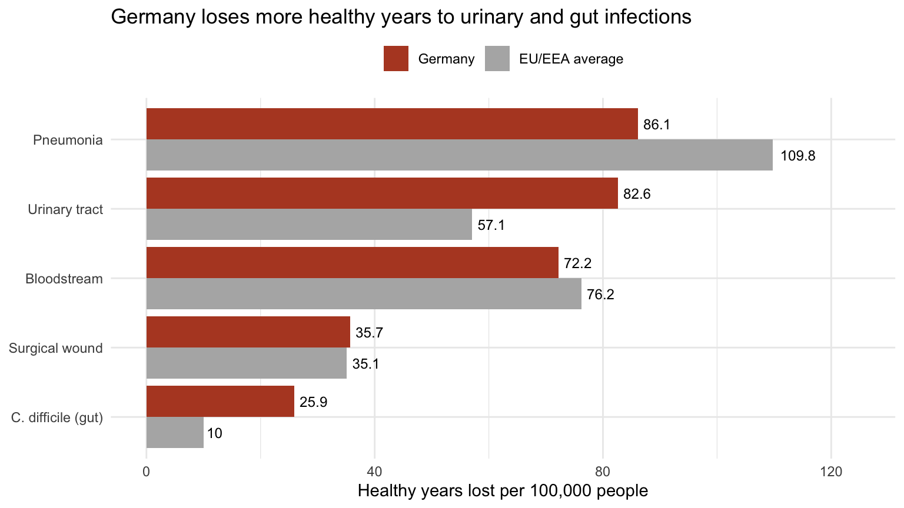

| Infection | Cases per year | Deaths per year | Share of all cases | Share of healthy years lost |
|---|---|---|---|---|
| Pneumonia | 106,586 | 3,968 | 22% | 28% |
| Urinary tract infection | 214,150 | 3,664 | 45% | 27% |
| Bloodstream infection | 26,976 | 3,905 | 6% | 23% |
| Surgical wound infection | 93,222 | 2,328 | 19% | 12% |
| C. difficile (gut) infection | 36,002 | 1,917 | 8% | 8% |
Patients in German hospitals were less likely to pick up an infection than the European average. Yet, for every 100,000 people, Germany lost more healthy years to these infections: 308 versus 290.
The puzzle
When you go into hospital, there is a small chance you will catch an infection that you did not have when you arrived. Doctors call these healthcare-associated infections. They include pneumonia, urinary tract infections and infections of a surgical wound. Most people recover, but some become seriously ill and some die.
To compare harm fairly, researchers use a measure called healthy years lost. It adds up the years people lose by dying early and the years they spend living with illness. One healthy year lost is one year of full health that someone did not get to live.
This post answers two questions:
- Which hospital infections cause the most harm?
- How can Germany have fewer infections per patient but more harm overall?
Where the numbers come from
The figures come from a study by Zacher et al. (2019), published in the European public-health journal Eurosurveillance. The researchers used hospital surveys from 2011 and 2012, in which staff checked every patient on a single day for infections picked up in hospital. They compared a representative sample of German hospitals with the average across the European Union and European Economic Area (EU/EEA).
The study covers five common hospital infections. The researchers built a free tool that turns these one-day snapshots into yearly estimates of cases, deaths and healthy years lost.
Not all infections are equally harmful
Table 1 shows the estimated yearly toll in Germany. The most common infection is not the most harmful one.
Urinary tract infections are the most common, making up almost half of all cases (45%). But they are usually mild, so they account for only about a quarter of healthy years lost (27%).
Pneumonia and bloodstream infections are the opposite. Together they are only 28% of cases, but they cause 51% of all healthy years lost. A bloodstream infection is rare, yet it is one of the deadliest.
Germany versus Europe
Figure 1 compares Germany with the EU/EEA average for each infection, per 100,000 people.

Two infections stand out. Germany loses far more healthy years than the European average to urinary tract infections (83 versus 57) and to C. difficile gut infections (26 versus 10). It does better on pneumonia (86 versus 110). The other two infections are close to the average.
Added together, Germany loses about 308 healthy years per 100,000 people each year, compared with 290 across the EU/EEA.
Why would safer hospitals lead to more harm?
The researchers point to how often Germans go to hospital. Germany has more hospital beds per person than most European countries, and a larger share of its population is admitted to hospital each year.
Think of it like this: if each hospital stay carries a slightly smaller risk, but many more people have a hospital stay, the total number of people harmed can still be higher. The study does not test this explanation directly, but it fits the pattern in the data.
Lower risk for each patient does not guarantee less harm overall. How many people go to hospital matters too.
So, what are the answers?
- Which hospital infections cause the most harm? Pneumonia and bloodstream infections. They are less common than urinary tract infections but much more likely to be serious or fatal (Table 1).
- How can Germany have fewer infections per patient but more harm overall? Germany has more hospital stays per person. More stays mean more chances for infection, even when each stay is a little safer. The extra harm comes mainly from urinary tract and C. difficile infections (Figure 1).
NoteWhat this data can’t tell us
These numbers are estimates, not counts. They are built from a one-day snapshot of hospital patients, scaled up to a whole year with a computer model, so the true values could be somewhat higher or lower. The data are also from 2011–12, so hospitals today may look different. And the comparison assumes German patients were about as sick as patients elsewhere in Europe.
The bottom line
We started with a puzzle: how can a country with fewer infections per hospital patient lose more healthy years to those infections? The answer is scale. Germany’s hospitals were slightly safer per patient, but Germany puts more people through hospital, so the total harm was higher: 308 versus 290 healthy years lost per 100,000 people.
The type of infection matters too. Common, mild infections such as urinary tract infections make up most cases, but rarer, more serious infections such as pneumonia and bloodstream infections cause half of the harm. This matches earlier European research, which found that hospital infections together cause more harm than many better-known infectious diseases (Cassini et al. 2016).
For anyone thinking about hospital safety, the lesson is simple: look at both how risky each hospital stay is and how many hospital stays there are.
About the data. Estimates come from the German national point prevalence survey (2011) and the European Centre for Disease Prevention and Control’s EU/EEA survey (2011–12). The researchers’ tool, BHAI, converts the share of patients with an infection on the survey day into yearly new cases, spreads them across age and sex groups, and applies published information on how long each infection lasts and how often it is fatal. Each estimate is the middle value of 1,000 simulations. Full details are in Zacher et al. (2019).
References
Cassini, Alessandro, Diamantis Plachouras, Tim Eckmanns, et al. 2016. “Burden of Six Healthcare-Associated Infections on European Population Health: Estimating Incidence-Based Disability-Adjusted Life Years Through a Population Prevalence-Based Modelling Study.” PLoS Medicine 13 (10): e1002150. https://doi.org/10.1371/journal.pmed.1002150.
Zacher, Benedikt, Sebastian Haller, Niklas Willrich, et al. 2019. “Application of a New Methodology and R Package Reveals a High Burden of Healthcare-Associated Infections (HAI) in Germany Compared to the Average in the European Union/European Economic Area, 2011 to 2012.” Eurosurveillance 24 (46): 1900135. https://doi.org/10.2807/1560-7917.ES.2019.24.46.1900135.